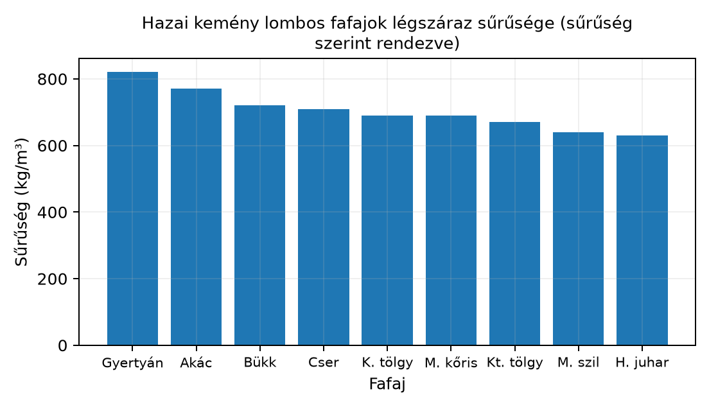

Egy asztalos műhelyben a vevő tömörfa étkezőasztalt szeretne. Azt mondja: „tölgyfa legyen, az erős”. Az asztalos azonban tudja, hogy a tölgy nem egyetlen fafaj: a kocsányos és a kocsánytalan tölgy kiváló bútorfa, míg a közeli rokon cser gyengébb, szálkásabb, és kültérben is kevésbé tartós. Ha rossz fajt választ, a kész asztal vetemedhet, a felületkezelés foltos lehet, a vevő reklamál. Ugyanígy: egy hajlított támlájú székhez a bükk a legjobb választás, mert gőzölés után jól hajlítható; egy kerti padhoz viszont az akác, mert vegyi védelem nélkül is évtizedekig bírja a nedvességet. A hazai kemény lombos fafajok ismerete nem lexikális tudás, hanem mindennapi döntési eszköz: ebből lesz a tartós bútor, a stabil lépcső, a szép parketta. Ebben az alfejezetben megismered a leggyakoribb hazai kemény lombos fafajokat, és megtanulod, hogyan válaszd ki őket a feladatnak megfelelően.
Képzelj el két deszkát a műhelypolcon. Az egyik világosbarna, jól látható, gyűrű alakban elrendezett nagy pórusokkal – ez tölgy. A másik halvány rózsaszínes-fehér, finom, elszórt pórusokkal, néha sötétbarna foltokkal – ez bükk. Ha mindkettőt megnedvesíted, a tölgyön sötét, kékes folt jelenik meg, ha vizes fémszerszám éri: ez a csersav reakciója. A bükkön ilyen nincs. Ha a deszkákat megemeled, a bükk valamivel nehezebb, a tölgy pedig határozottan „fanyar” illatú. Az alábbi ábra a leggyakoribb hazai kemény lombos fafajok légszáraz sűrűségét hasonlítja össze. A sűrűség jó kiindulópont a keménység és a tartósság becsléséhez, de önmagában nem elég: a felhasználhatóságot a szöveti szerkezet, a tartósság és a megmunkálhatóság együtt határozza meg.

Az ábra azt mutatja, hogy a gyertyán a legsűrűbb, az akác is nagyon nehéz, a juhar és a szil a könnyebb kemény lombosok közé tartozik. A sűrűség mellett azonban a pórusok elrendezése, a bélsugarak és a szín is fontos a felismeréshez.
Definíció. Kemény lombos fafajoknak nevezzük azokat a lombos fákat, amelyek faanyaga nagy sűrűségű, kemény, és jellemzően lassan nő. A hazai gyakorlatban ide soroljuk a tölgyeket, a bükköt, a kőrist, az akácot, a gyertyánt, a juhart és a szilt. A határ a „lágy lombos” fajokhoz képest (például nyár, fűz, hárs) nem éles, de a kemény lombosok általában 600 kg/m³ feletti légszáraz sűrűségűek.
Definíció. A gyűrűs likacsú fafajoknál (tölgy, cser, kőris, akác, szil) a korai pásztában egy vagy több sor nagy, szabad szemmel is jól látható pórus (edény) gyűrűt alkot az évgyűrű határán. A szórt likacsú fafajoknál (bükk, gyertyán, juhar) a pórusok kicsik és egyenletesen szóródnak az évgyűrűben, ezért felületük finomabb, egyenletesebb.
Szabály. A fafaj kiválasztásánál mindig a felhasználási célt, a terhelést, a nedvességnek való kitettséget és a megmunkálhatóságot együtt értékeljük. Egyetlen fafaj sem „jobb” mindenre; a jó asztalos a célnak megfelelő fajt választja.
Megjegyzés. A fafajok pontos botanikai azonosításához mikroszkópos vagy makroszkópos határozókulcsok szükségesek. A műhelyben a szín, a rajzolat, a póruselrendezés, a szag és a keménység alapján dolgozunk, de kétség esetén mintát kell beküldeni vagy szakkönyvet használni.
Felismerés. A két hazai tölgyfaj faanyaga nagyon hasonló, ezért a kereskedelemben gyakran egyszerűen „tölgyként” hozzák forgalomba. A geszt világos- vagy sötétbarna, a szijács keskeny, sárgásfehér. A fa gyűrűs likacsú: az évgyűrűhatáron egy-két sor nagy pórus látható, a késői pászta sűrűbb, finomabb. A bélsugarak szélesek, szabad szemmel is jól láthatók, különösen sugármetszeten, ahol fényes, tükörszerű foltokat alkotnak – ezt nevezik tükörfoltnak vagy tölgytükörnek. A fa illata fanyar, cserszagú.
Tulajdonságok. A tölgy sűrűsége 670–690 kg/m³ körül van (légszárazon, tájékoztató érték), kemény, erős, kopásálló. Természetes tartóssága jó, de nem kiemelkedő: kültérben, talajjal érintkezve kevésbé tartós, mint az akác. Zsugorodása közepes, vetemedésre mérsékelten hajlamos, ezért jól ki kell szárítani.
Csersav és vasreakció. A tölgy magas csersavtartalma a fa egyik legfontosabb kémiai jellemzője. Ha a nyers tölgyfa nedves felületét vas- vagy acélszerszám éri, a csersav a vassal sötétkék-fekete reakciót ad (vasfolt). Ezért tölgy megmunkálásakor kerülni kell a vizes fémszerszámot, vagy azonnal le kell tisztítani a felületet. A csersav ugyanakkor hasznos is: a tölgyfa pácolásakor a vizes bázisú pácok sötétebb, mélyebb színt adnak, és a csersav a fa természetes védelmét is növeli. A csersav a ragasztást is befolyásolhatja: erősen savas felület gyengítheti a lúgos ragasztókat, ezért tölgy ragasztásakor frissen gyalult, tiszta felületet használjunk.
Felhasználás. Tömörfa bútorok (asztalok, székek, szekrények), lépcsőfokok, parketta, ajtók, ablakok, furnér. A tölgy a magyar asztalosipar egyik legfontosabb fafaja. Kültéri szerkezetekhez is használható, de ott az akác vagy a vörösfenyő gyakran jobb választás.
Felismerés. A cser (Quercus cerris) szintén tölgyféle, de bélsugarai a tölgyéhez hasonlóan szélesek, feltűnőek. Megkülönböztető jegy a széles, világos szijács és a vörösesbarna-szürkés, gyakran fagyléces, repedésre hajlamos geszt; a pórusok gyűrűs elrendezésűek, a felület durvább, „szálkásabb” (ellenőrizendő: faanyagismereti határozó).
Tulajdonságok. A cser sűrűsége hasonló a tölgyéhez (710 kg/m³ körül), de faanyaga ridegebb, szálkásabban törik, és természetes tartóssága gyengébb. A vasfoltosodás a csersav miatt itt is előfordulhat (ellenőrizendő), a fa minősége összességében elmarad a kocsányos és kocsánytalan tölgytől.
Felhasználás. A cser elsősorban ott használható, ahol a nagy szilárdság nem elsődleges: csomagolóanyag, raklap, kerítésoszlop, tűzifa, ritkábban olcsóbb bútoralkatrész. Bútoripari felhasználása korlátozott, mert nehezen gyalulható simára, és a felület minősége elmarad a tölgyétől. Az asztalosnak tudnia kell megkülönböztetni a tölgytől, hogy ne adjon el cser fát tölgyként.
Felismerés. A bükk faanyaga halvány sárgásfehér, rózsaszínes beütéssel, szórt likacsú: a pórusok kicsik, szabad szemmel alig láthatók, ezért a felület nagyon finom, egyenletes. Jellemző a vörösbarna álgeszt: az idősebb fák gesztjében szabálytalan, sötét folt vagy mag alakul ki, amely nem a valódi geszt, hanem a fa öregedésével, esetleg gombásodással összefüggő elszíneződés. Az egészséges vörös álgeszt a szilárdságot jellemzően nem csökkenti lényegesen, de színhibát okoz, és a gőzöléskor/pácoláskor eltérően viselkedik; a puha, foltos, korhadásba hajló álgeszt viszont teherhordó elembe nem kerülhet (ellenőrizendő: szakkönyv).
Tulajdonságok. A bükk sűrűsége 720 kg/m³ körül van, nagyon kemény, szívós, kopásálló. Zsugorodása és dagadása jelentős, ezért a bükköt nagyon jól ki kell szárítani, és a készterméket védő felületkezeléssel kell ellátni. Különleges tulajdonsága a gőzölhetőség: telített gőzben, megfelelő hőmérsékleten (kb. 100 °C, ellenőrizendő: technológiai paraméter) a fa megpuhul, és kis sugarú ívekre hajlítható. Lehűlés után a hajlított forma megtartja alakját. Ezért a bükk a hajlított bútorok (Thonet-szék, hajlított támlák, karosszékek) klasszikus anyaga.
Felhasználás. Székek, asztalok, lépcsőfokok, parketta, konyhai eszközök, hajlított bútoralkatrészek, játékok, furnér. A bükköt gőzöléssel is színezik: a gőzölt bükk színe meleg vörösesbarna lesz, és a fa méretstabilitása is javul. A korhadásba hajló álgesztes bükköt kerülni kell teherhordó szerkezetekben.
Felismerés. A magas kőris (Fraxinus excelsior) faanyaga világos sárgásfehér, a geszt és a szijács nem különül el élesen, színe egységes. Gyűrűs likacsú, de a tölgyhöz képest a korai pászta pórusai nagyobbak, a bélsugarak keskenyek, alig láthatók. A felület a tölgynél finomabb, a szín világosabb.
Tulajdonságok. A kőris sűrűsége 690 kg/m³ körül van, kemény, szívós, rugalmas és szilánkosan törik. Gőzölve kiválóan hajlítható, szívós, rugalmas, ezért sporteszközökhöz (síléc, jégkorongütő, tornaszer) és szerszámnyelekhez kiváló. Természetes tartóssága gyenge, ezért kültérben csak vegyi védelemmel használható.
Felhasználás. Bútorok (különösen hajlított elemek), lépcsőkorlátok, sporteszközök, szerszámnyelek, furnér, parketta. Világos színe miatt jól pácolható, de a gyűrűs pórusok miatt a pórustömítést igényelhet a felületkezelés.
Felismerés. Az akác (Robinia pseudoacacia) gesztje sárgászöld, majd világosbarnává, sötétbarnává érik; a szijács keskeny, fehéres. Gyűrűs likacsú, a pórusok nagyok, a bélsugarak finomak. Az akácfa nagyon kemény, sűrű (770 kg/m³), és jellegzetesen nehéz. A frissen vágott akác erős, kissé kellemetlen szagú.
Tulajdonságok. Az akác rendkívül tartós: természetes tartóssága a hazai fafajok közül az egyik legjobb, talajjal érintkezve is évtizedekig bírja (tájékoztató: tartóssági osztály 1-2, ellenőrizendő). Ezért kiváló kültéri felhasználásra. Ugyanakkor nagyon nehéz megmunkálni: tompítja a szerszámokat, gyaluláskor, maráskor kitöredezhet, szálkásodik. Jól ragasztható, de a nagy sűrűség miatt préselésnél nagyobb nyomás kell. Pácolhatósága korlátozott, mert a sötét geszt nehezen veszi fel a világos pácokat.
Felhasználás. Kültéri bútorok, kerítésoszlopok, teraszburkolatok, szerszámnyelek, lépcsőfokok, parketta (ritkábban), játszótéri eszközök. Az akác tehát a kültéri asztalos munkák első számú hazai fafaja.
Felismerés. A gyertyán (Carpinus betulus) faanyaga világos, szürkésfehér, szórt likacsú, nagyon finom szövetű. A pórusok alig láthatók, a bélsugarak szélesek, de halványak. A fa sűrűsége a legnagyobb a hazai fafajok között: 820 kg/m³ körül. A gyertyán gyakran hullámos, csavarodott szövetű, ami megnehezíti a hasítást és a gyalulást.
Tulajdonságok. Extrém kemény, kopásálló, de rideg, és nagyon nehéz megmunkálni. Erősen tompítja a szerszámokat, gyaluláskor, maráskor hajlamos a kitöredezésre. Ragasztása jó, de a nagy sűrűség miatt alapos felület-előkészítést igényel.
Felhasználás. Gyalupadok, szorítók, szerszámnyelek, fogaskerekek, ütőfelületek, csapágybetétek (régen), intarzia, hangszeralkatrészek. Bútoripari felhasználása korlátozott, mert a megmunkálás költséges, de ahol nagy kopásállóság kell, ott pótolhatatlan.
Felismerés. A hegyi juhar (Acer pseudoplatanus) faanyaga világos, csaknem fehér, szórt likacsú, finom szövetű. A bélsugarak vékonyak, alig láthatók. A korai juhar (Acer platanoides) némileg sárgásabb. A juhar jellegzetessége a madárszem rajzolat: a szabálytalan növekedés apró, sötét pontokat hoz létre, amelyeket furnérként nagyra értékelnek.
Tulajdonságok. A juhar sűrűsége 630 kg/m³ körül van, kemény, de jól megmunkálható. Simára gyalulható, marható, esztergálható. Jól ragasztható, finom felületet ad. Zsugorodása közepes, vetemedésre mérsékelten hajlamos.
Felhasználás. Bútorok, furnérok, hangszerek (hegedű, zongora), konyhai eszközök, játékok, intarzia. A világos szín miatt kiváló alap pácoláshoz, de a pácolás során foltosodhat, ezért pórustömítést vagy előpácolást igényelhet.
Felismerés. A mezei szil (Ulmus minor) és más szil fajok gesztje vörösesbarna, a szijács sárgásfehér. Gyűrűs likacsú, de a pórusok a tölgyénél kisebbek, a bélsugarak finomak. Jellegzetes a szil szivárványos rajzolata: a bélsugarak és a hullámos évgyűrűk fényes, sávos mintázatot adnak.
Tulajdonságok. A szil sűrűsége 640 kg/m³ körül van, szívós, szilánkosan törik, nehezen hasad. Jól hajlítható, és gőzöléssel is formázható. Természetes tartóssága közepes; régen víz alatti szerkezetekhez is használták, mert nedvességben viszonylag tartós. Megmunkálhatósága jó, de a csavarodott növésű anyag nehezen gyalulható.
Felhasználás. Bútorok, furnérok, hajóépítés (régen), kocsikerék-agy, parketta, dísztárgyak. A szil szép rajzolata miatt furnérként is keresett.
A hazai kemény lombos fafajok közös jellemzője, hogy a lágy fafajokhoz képest jobban tompítják a szerszámokat. Ezért gyakrabban kell élezni, és éles, jó minőségű szerszámokat kell használni. A gyűrűs likacsú fafajok (tölgy, kőris, akác) hajlamosak a kitöredezésre a pórusok mentén, különösen maráskor vagy gyaluláskor, ha a szerszám éle tompa vagy a forgácsolási irány rossz. A szórt likacsú fafajok (bükk, gyertyán, juhar) simább felületet adnak, de a bükk és a gyertyán nagy sűrűsége miatt a gyalulás és marás nagyobb erőt igényel.
Ragasztás. A kemény lombos fafajok általában jól ragaszthatók, de a tölgy csersavtartalma és az akác nagy sűrűsége miatt a ragasztó kiválasztását és a préselési nyomást az anyaghoz kell igazítani. A bükköt és a kőrist frissen gyalult felülettel kell ragasztani, mert a felületi oxidáció ronthatja a kötést.
Pácolás. A pácolhatóság fafajonként eltérő. A tölgy a csersavtartalom miatt mély, sötét színeket ad, de a pórusokban egyenetlenül szívódhat fel a pác, ezért gyakran pórustömítést alkalmaznak. A bükk és a juhar világos, egyenletes felületet ad, de foltosodhat, ezért előpácolást vagy alapozást igényel. Az akác sötét gesztje nehezen pácolható világosabbra.
Figyelem – fapor. A kemény lombos fafajok – különösen a tölgy és a bükk – pora bizonyítottan rákkeltő (IARC 1. csoport; az EU rákkeltőanyag-irányelve, 2004/37/EK szerint munkahelyi határérték: 2 mg/m³ – ellenőrizendő: hatályos hazai rendelet és érték). Puha- és keményfa keverékénél is ezt kell alkalmazni. Ezért minden porképző megmunkálásnál (fűrészelés, gyalulás, marás, csiszolás) kötelező a gépi elszívás és a megfelelő légzésvédelem (legalább FFP2, csiszolásnál FFP3 – ellenőrizendő: kockázatértékelés). A munkaterületet porszívózással tisztítsd (nem söpréssel, nem sűrített levegővel).
Amikor egy termékhez fafajt választasz, a következő kérdéseket tedd fel:
A kemény lombos fűrészáru átvételekor az alábbiakat ellenőrizd:
Ha eltérést találsz, a tételt különítsd el, és jelezd a szállítónak vagy a műhelyvezetőnek.
1. hiba: A cser fát tölgyként árulják vagy
használják.
Ok: A két fafaj hasonlít, a cser olcsóbb.
Következmény: a késztermék gyengébb, szálkás felületű,
kültérben gyorsan tönkremegy. Helyes gyakorlat: tanuld meg a
szijács, a gesztszín és a felületi durvaság különbségét; ha bizonytalan
vagy, kérj mintát vagy laboratóriumi azonosítást.
2. hiba: Álgesztes bükköt használnak teherhordó
szerkezetbe.
Ok: A korhadásba hajló, puha, foltos álgeszt nem mindig látszik
a deszka felületén, vagy a beszerzéskor nem figyelnek rá.
Következmény: az alkatrész idő előtt eltörik, a szék széttörik.
Helyes gyakorlat: bükk vásárlásakor ellenőrizd a
vágásfelületeket, és a puha, foltos álgesztes darabokat csak dekoratív,
nem teherhordó helyre használd.
3. hiba: Tölgyfa megmunkálásakor vizes fémszerszámot
használnak, és vasfoltok keletkeznek.
Ok: A csersav és a vas reakciója. Következmény: sötét,
eltávolíthatatlan foltok a felületen. Helyes gyakorlat: tölgy
megmunkálásakor száraz, rozsdamentes vagy bevonatos szerszámot használj,
vagy azonnal tisztítsd meg a felületet. A folt halványítható oxálsavval
(ellenőrizendő: vegyszer és biztonsági adatlap), de jobb megelőzni.
4. hiba: A bükköt nem szárítják ki eléggé, és a kész bútor
vetemedik.
Ok: A bükk zsugorodása nagy. Következmény: a
ragasztott lapok elhúznak, az ajtók szorulnak. Helyes
gyakorlat: a bükköt a felhasználási nedvességtartalomra kell
szárítani, és a készterméket mielőbb le kell zárni lakkal vagy
olajjal.
Egy asztalos műhelyben kerti padot rendeltek. A vevő „tölgyfa padot” kért, mert azt hallotta, hogy a tölgy tartós. Az asztalos elmagyarázta, hogy a tölgy természetes tartóssága jó, de a hazai akác sokkal jobb választás kültérre: vegyi védelem nélkül is évtizedekig bírja, ráadásul olcsóbban beszerezhető. A vevő beleegyezett, és a pad akácból készült. Az asztalos a megmunkálásnál keményfém lapkás szerszámokat használt, mert az akác gyorsan tompítja az acélt. A padot olajjal kezelte, nem lakkal, mert a kültéri fa felületén az olaj jobban követi a fa mozgását. Három év használat után a pad stabil, csak a felületi olajozást kellett megismételni. Tanulság: a fafaj kiválasztása a felhasználási környezetből indul, nem a megszokásból.
1. feladat (A)
Sorold fel a hazai kemény lombos fafajok közül azokat, amelyek gyűrűs
likacsúak, és azokat, amelyek szórt likacsúak.
2. feladat (A)
Melyik fafajt választanád kültéri teraszburkolathoz: tölgy, bükk vagy
akác? Indokold röviden!
3. feladat (B)
Egy asztalosműhelyben 3 m³ légszáraz tölgy fűrészárut tárolnak. A tölgy
átlagos sűrűsége 690 kg/m³. Mennyi a fa össztömege? Ha a fa
nedvességtartalma 12% (abszolút, száraz tömegre vonatkoztatva), mennyi a
száraz fa tömege? (Használd a
és az
képleteket.)
4. feladat (B)
Tervezz meg egy egyszerű tömörfa étkezőasztal lapját! Milyen fafajt
választanál a laphoz, ha a vevő világos, finom felületet szeretne, és
miért? Milyen szempontokat vennél még figyelembe a fafaj
kiválasztásánál?
5. feladat (C)
Egy vevő tölgyfa lépcsőfokokat rendel. A beszállító cser fűrészárut
szállít. Milyen vizsgálatokkal győződnél meg arról, hogy valóban cserről
van szó, és nem tölgyről? Mi a teendő, ha bebizonyosodik, hogy csert
kaptál?
6. feladat (D)
Keress a műhelyben vagy otthon egy kemény lombos fából készült tárgyat
(bútor, szerszámnyél, parketta). Vizsgáld meg a színét, rajzolatát,
pórusait! Próbáld meghatározni, melyik fafajból készült, és írd le,
milyen jegyek alapján döntöttél. Ha van nagyító, használd!
1. feladat
Gyűrűs likacsú: tölgyek (kocsányos, kocsánytalan), cser, kőris, akác,
szil. Szórt likacsú: bükk, gyertyán, juhar.
2. feladat
Akác, mert természetes tartóssága kiemelkedő, jól bírja a nedvességet és
a talajjal való érintkezést; a tölgy is használható, de kevésbé tartós,
a bükk pedig kültérre nem alkalmas (gyorsan tönkremegy).
3. feladat
Adott:
,
,
.
Keresett:
(nedves tömeg),
(száraz tömeg).
A sűrűség légszáraz (kb. 12% nedvességtartalmú) tömegre
vonatkozik.
.
A nedvességtartalom:
,
átrendezve:
.
,
tehát
.
Ellenőrzés: a száraz tömeg kisebb, mint a nedves, ami logikus. A
különbség
,
ami
,
stimmel.
4. feladat
Világos, finom felületű asztallaphoz jó választás a juhar vagy a kőris.
A juhar szinte fehér, nagyon finom szövetű, de pácoláskor foltosodhat; a
kőris világos sárgás, szívós, jól megmunkálható. Szempontok:
méretstabilitás (a kőris jobb, mint a bükk), megmunkálhatóság,
ragaszthatóság, felületkezelés, a vevő ízlése, a várható költségek. A
bükköt kerülném, mert jobban dolgozik; a tölgy sötétebb, markáns
rajzolatú.
5. feladat
Vizsgálatok: a szijács szélessége (a cseré széles, világos), a geszt
színe (a cser vörösesbarna-szürkés, gyakran fagyléces), a repedezettség
és a felület durvasága (a cser szálkásabb), szükség esetén
laborvizsgálat (a bélsugarak a cseren is szélesek, ezért ez önmagában
nem döntő; ellenőrizendő: faanyagismereti határozó). Ha kétség marad,
mikroszkópos vizsgálatot kérhetsz. Ha bebizonyosodik a cser, a tételt
nem szabad tölgyként felhasználni; jelezni kell a szállítónak, és a
tételt visszaküldeni vagy csak olyan célra használni, ahol a cser
megfelel (például csomagolóanyag).
6. feladat
Egyéni megoldás. Például egy világos, finom szövetű gyertyán nyelű
kalapács: nagyon kemény, szórt likacsú, világos szín. Vagy egy
sötétbarna, gyűrűs likacsú tölgyfa lépcsőfok: látszanak a nagy pórusok
és a bélsugarak.
A hazai kemény lombos fafajok – tölgyek, cser, bükk, kőris, akác, gyertyán, juhar, szil – nagy sűrűségű, kemény, tartós anyagok, de mindegyik más célt szolgál. A gyűrűs likacsú fajok (tölgy, cser, kőris, akác, szil) jól felismerhetők a korai pászta nagy pórusairól; a szórt likacsúak (bükk, gyertyán, juhar) finomabb felületet adnak. A tölgy csersavtartalma vassal sötét foltot képez, ugyanakkor jó pácolhatóságot és természetes védelmet ad. A cser a tölgynél gyengébb, ezért bútoripari felhasználása korlátozott. A bükk gőzöléssel hajlítható, de álgesztje csökkenti a szilárdságot. A kőris rugalmas, sporteszközökhöz és szerszámnyelekhez kiváló; az akác kiemelkedően tartós kültérben, de nehezen megmunkálható. A gyertyán extrém kemény, a juhar világos és finom, a szil szép rajzolatú, hajlítható. A kemény lombos fajok fapora egészségkárosító lehet, ezért elszívás és légzésvédelem kötelező. Továbbvitt eredmény: ezen fafajok tulajdonságait és felhasználási területeit használjuk a Trópusi fafajok, helyettesítés és legális, tanúsított faanyag és a Fűrészáru fajtái, méretei és minőségi osztályozása alfejezetekben, ahol a fafajválasztás és az anyagbeszerzés összekapcsolódik.